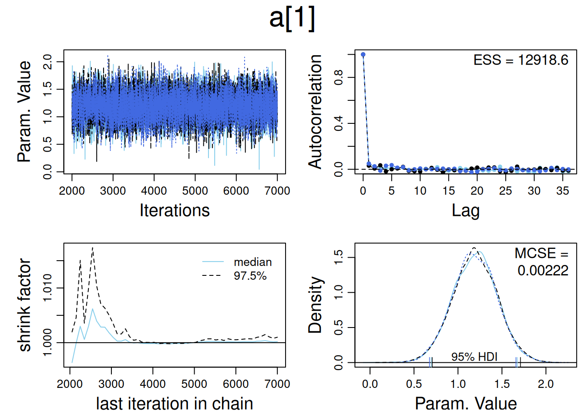
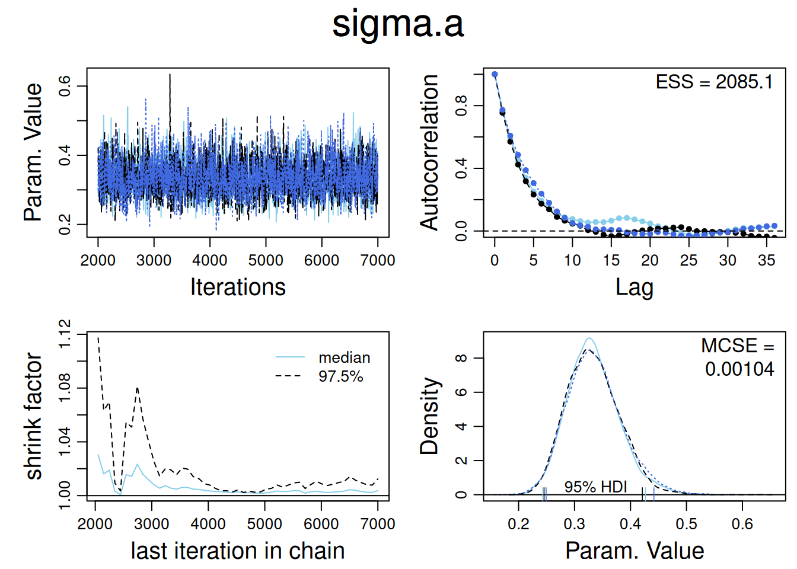
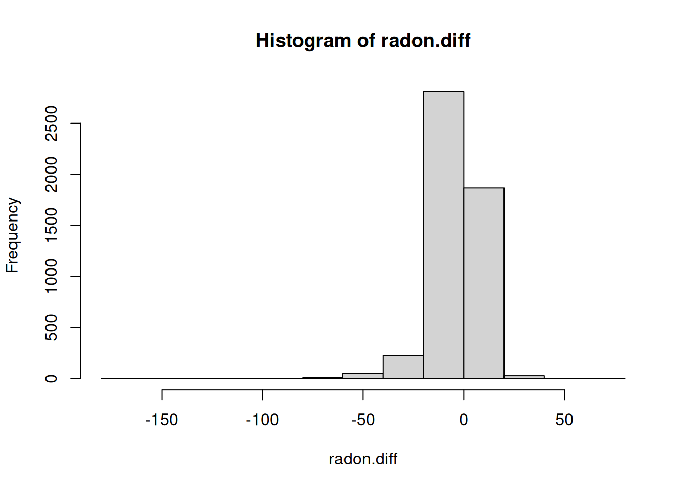
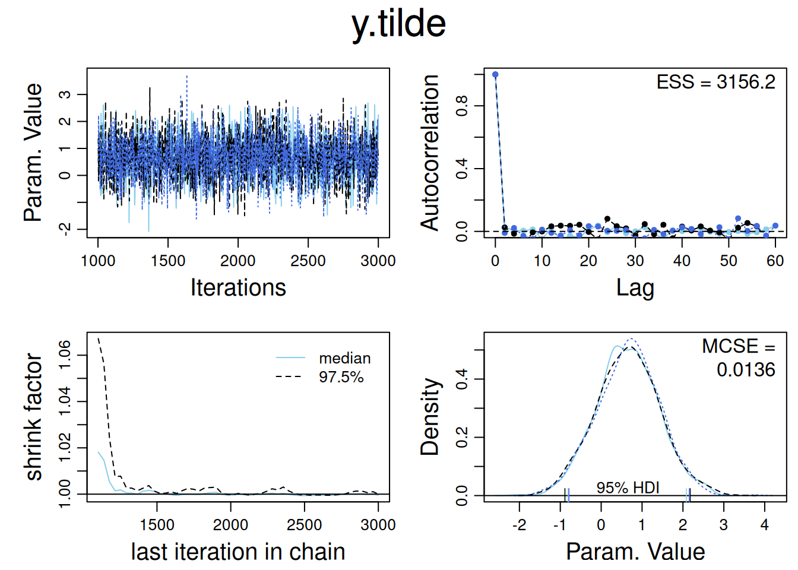

srrs2 <- read.table("./data/ARM_Data/radon/srrs2.dat", header=TRUE, sep=",")
mn <- srrs2$state == "MN"
radon <- srrs2$activity[mn]
y <- log(ifelse(radon == 0, 0.1, radon))
n <- length(radon)
x <- srrs2$floor[mn] # 0 for basement, 1 for first floor4 Introduction to Multilevel Modeling in R and Bugs
Multilevel models allow intercepts and slopes to vary across groups. These models are useful when there is hierarchical data (e.g., individuals nested within schools, or measurements within counties).
R functions like lm() and lmer() can be used for classical and multilevel models, but they rely on point estimates and may have limitations, especially with small sample sizes or complicated models.
Bugs is introduced as a solution for complex multilevel models, enabling full Bayesian inference which accounts for uncertainty in parameter estimates.
Key Steps in Multilevel Modeling:
- Start with classical regression using lm() or glm() in R.
- Add varying intercepts/slopes with lmer().
- Use JAGS or STAN to fit fully Bayesian models when needed.
- For very large models, further programming in R may be required.
4.1 Bayesian inference and prior distributions
The main challenge in fitting a multilevel model is estimating both the data-level regression (which includes the coefficients for all group indicators) and the group-level model. The most direct approach is through Bayesian inference, which uses the group-level model as “prior information” to help estimate individual-level coefficients.
In Bayesian multilevel models, prior distributions are required for all parameters. These priors typically fall into two categories:
Group-level models, often represented by normal distributions, where the mean and standard deviation are assigned noninformative priors.
Noninformative uniform distributions, used when there is little prior information about the parameters.
4.1.1 Classical Regression and Generalized Linear Models
In classical regression and generalized linear models (GLMs), these models can be seen as special cases of multilevel modeling, where no group-level model is specified, meaning there is no prior information in the Bayesian sense. The key points are:
4.1.1.1 Classical Regression Model
In classical regression, the model is represented as:
\[ y_i = X_i \beta + \epsilon_i \]
with independent errors:
\[ \epsilon_i \sim N(0, \sigma_y^2) \]
The classical model assumes no prior structure on the parameters, where:
- The coefficients \(\beta\) have a uniform prior distribution over the entire real number range \((-\infty, \infty)\).
- The error variance \(\sigma_y\) has a uniform prior distribution on \((0, \infty)\).
4.1.1.2 Classical Logistic Regression Model
In classical logistic regression, the probability that \(y_i = 1\) is given by:
\[ \text{Pr}(y_i = 1) = \text{logit}^{-1}(X_i \beta) \]
Again, the prior on the components of \(\beta\) is uniform, meaning there is no assumption or restriction on the parameter values.
4.1.2 Simplest Varying-Intercept Model
The simplest form of multilevel regression is the varying-intercept model, where both individual and group-level errors are normally distributed. The model can be expressed as:
\[ y_i \sim N(\alpha_{j[i]} + \beta x_i, \sigma_y^2) \]
and:
\[ \alpha_j \sim N(\mu_\alpha, \sigma_\alpha^2) \]
4.1.2.1 Interpretation:
- The group-specific intercepts \(\alpha_j\) follow a normal distribution, which can be thought of as a prior distribution for the intercepts in a Bayesian framework.
- The parameters \(\mu_\alpha\) and \(\sigma_\alpha\) are hyperparameters that describe the distribution of the group-level intercepts and are estimated from the data.
4.1.2.2 Prior Distributions in Bayesian Inference:
- In Bayesian inference, all parameters, including hyperparameters \(\mu_\alpha\), \(\sigma_\alpha\), \(\beta\), and \(\sigma_y\), must have prior distributions.
- Typically, these priors are set to noninformative uniform distributions when there is little prior knowledge about the parameters.
The complete prior distribution is written as:
\[ p(\alpha, \beta, \mu_\alpha, \sigma_y, \sigma_\alpha) \propto \prod_{j=1}^{J} N(\alpha_j | \mu_\alpha, \sigma_\alpha^2) \]
This indicates that the intercepts ( _j ) are modeled independently, following normal distributions, and their probability densities are multiplied to form the joint prior density.
4.1.3 Varying-Intercept, Varying-Slope Model
A more complex form of multilevel modeling is the varying-intercept, varying-slope model, where both the intercepts and slopes vary across groups. The model is expressed as:
\[ y_i = \alpha_{j[i]} + \beta_{j[i]} x_i + \epsilon_i \]
4.1.3.1 Model Parameters:
- This model has \(2J\) parameters, represented by \(J\) pairs: \((\alpha_j, \beta_j)\).
- Each group \(j\) has its own intercept \(\alpha_j\) and slope \(\beta_j\), which vary across groups.
4.1.3.2 Prior Distributions:
- The prior distribution for the pairs \((\alpha_j, \beta_j)\) is a bivariate normal distribution, allowing for correlation between the intercept and slope within each group.
- The hyperparameters governing the distribution of \(\alpha_j\) and \(\beta_j\) (such as the means and variances) are typically assigned independent uniform prior distributions when no prior knowledge is available.
4.1.3.3 Joint Prior Distribution:
The joint prior for the intercepts and slopes across all groups can be expressed as a bivariate normal distribution, which captures the relationship between the group-level intercepts and slopes:
\[ (\alpha_j, \beta_j) \sim \text{Bivariate Normal}(\mu_{\alpha}, \mu_{\beta}, \Sigma) \]
Where: - \(\mu_{\alpha}\) and \(\mu_{\beta}\) are the means of the intercepts and slopes. - \(\Sigma\) is the covariance matrix, which captures the variances of the intercepts and slopes and the correlation between them.
4.1.4 Multilevel Model with Group-Level Predictors: Exchangeability and Prior Distributions
In multilevel models, we typically do not assign models to the coefficients of group-level or individual-level predictors that do not vary by group. In Bayesian terminology, we often assign noninformative uniform prior distributions to these coefficients.
4.1.4.1 Group-Level Regression and Prior Distributions:
A group-level regression induces different prior distributions on the group-level coefficients. Consider the following simple varying-intercept model with one predictor at the individual level and one at the group level:
\[ y_i = \alpha_{j[i]} + \beta x_i + \epsilon_i, \ \epsilon_i \sim N(0, \sigma_y^2), \ \text{for} \ i = 1, \ldots, n \]
\[ \alpha_j = \gamma_0 + \gamma_1 u_j + \eta_j, \ \eta_j \sim N(0, \sigma_\alpha^2), \ \text{for} \ j = 1, \ldots, J \]
4.1.4.2 Model Interpretation:
- The first equation is the data model or likelihood.
- The second equation is the group-level model or prior model for the intercepts \(\alpha_j\).
- The intercepts \(\alpha_j\) have different prior distributions based on the group-level predictor \(u_j\). The mean of \(\alpha_j\) is \(\hat{\alpha_j} = \gamma_0 + \gamma_1 u_j\), and the standard deviation is \(\sigma_\alpha\).
4.1.4.3 Exchangeability of the Group-Level Errors:
An equivalent way to think of this model is that the group-level errors \(\eta_j\) are exchangeable:
\[ \alpha_j = \gamma_0 + \gamma_1 u_j + \eta_j, \ \eta_j \sim N(0, \sigma_\alpha^2) \]
In this view, the \(\alpha_j\)’s are determined by the group-level predictor \(u_j\) and the group-level error \(\eta_j\), with \(\eta_j\) assigned a common prior distribution.
4.1.4.4 Key Insights:
- The prior distribution in a multilevel model can be viewed in two ways:
- As a model representing a group-level estimate for each \(\alpha_j\).
- As a single model representing the distribution of the group-level errors \(\eta_j\).
In practical applications, it is often more efficient to use the first approach when working with group-level predictors in software like Bugs, as this reduces the number of variables and speeds up the computation.
4.2 Fitting and Understanding a Varying-Intercept Multilevel Model
4.2.1 Loading Data in R
We use radon measurements and floor indicators (basement or first floor) for 919 homes in 85 counties in Minnesota. Since we assume multiplicative effects, we work with the logarithms of radon levels. Any radon measurements recorded as 0.0 are corrected to 0.1 before taking the logarithm.
To account for county-specific effects, we create a county-level indicator for each observation:
srrs2.fips <- srrs2$stfips * 1000 + srrs2$cntyfips
county.name <- as.vector(srrs2$county[mn])
uniq.name <- unique(county.name)
J <- length(uniq.name)
county <- rep(NA, J)
for (i in 1:J) {
county[county.name == uniq.name[i]] <- i
}4.2.2 Classical Complete-Pooling Regression in R
We start by fitting a classical regression model that ignores county-level differences, treating the entire dataset as if it comes from a single population. This approach is known as complete pooling.
# Complete-pooling model
lm.pooled <- lm(y ~ x)
# Display results
summary(lm.pooled)
Call:
lm(formula = y ~ x)
Residuals:
Min 1Q Median 3Q Max
-3.6293 -0.5383 0.0342 0.5603 2.5486
Coefficients:
Estimate Std. Error t value Pr(>|t|)
(Intercept) 1.32674 0.02972 44.640 <2e-16 ***
x -0.61339 0.07284 -8.421 <2e-16 ***
---
Signif. codes: 0 '***' 0.001 '**' 0.01 '*' 0.05 '.' 0.1 ' ' 1
Residual standard error: 0.8226 on 917 degrees of freedom
Multiple R-squared: 0.07178, Adjusted R-squared: 0.07077
F-statistic: 70.91 on 1 and 917 DF, p-value: < 2.2e-164.2.3 Classical No-Pooling Regression in R
In the no-pooling model, we include county-specific indicators to allow each county to have its own intercept. This model includes 85 counties but uses 84 indicators since we already have a constant term.
# No-pooling model
lm.unpooled.0 <- lm(formula = y ~ x + factor(county))
# Display results
summary(lm.unpooled.0)
Call:
lm(formula = y ~ x + factor(county))
Residuals:
Min 1Q Median 3Q Max
-3.14595 -0.45405 0.00065 0.45376 2.65987
Coefficients:
Estimate Std. Error t value Pr(>|t|)
(Intercept) 0.84054 0.37866 2.220 0.02670 *
x -0.72054 0.07352 -9.800 < 2e-16 ***
factor(county)2 0.03428 0.39274 0.087 0.93047
factor(county)3 0.68816 0.57854 1.189 0.23459
factor(county)4 0.71218 0.47470 1.500 0.13392
factor(county)5 0.59203 0.53487 1.107 0.26867
factor(county)6 0.67247 0.57802 1.163 0.24500
factor(county)7 1.17162 0.42892 2.732 0.00644 **
factor(county)8 1.14904 0.53519 2.147 0.03208 *
factor(county)9 0.16250 0.44764 0.363 0.71669
factor(county)10 0.72336 0.48861 1.480 0.13913
factor(county)11 0.56059 0.50775 1.104 0.26988
factor(county)12 0.88971 0.53519 1.662 0.09680 .
factor(county)13 0.19818 0.48861 0.406 0.68514
factor(county)14 1.14784 0.42886 2.677 0.00759 **
factor(county)15 0.49743 0.53519 0.929 0.35292
factor(county)16 -0.17568 0.65534 -0.268 0.78871
factor(county)17 0.43426 0.53613 0.810 0.41818
factor(county)18 0.28101 0.43672 0.643 0.52011
factor(county)19 0.49777 0.39027 1.275 0.20251
factor(county)20 0.95977 0.57802 1.660 0.09720 .
factor(county)21 0.89345 0.45467 1.965 0.04974 *
factor(county)22 -0.20375 0.48831 -0.417 0.67660
factor(county)23 0.55945 0.65534 0.854 0.39353
factor(county)24 1.26108 0.45456 2.774 0.00566 **
factor(county)25 1.11018 0.42892 2.588 0.00981 **
factor(county)26 0.52004 0.38549 1.349 0.17770
factor(county)27 0.93282 0.48831 1.910 0.05644 .
factor(county)28 0.40105 0.50807 0.789 0.43013
factor(county)29 0.21546 0.57802 0.373 0.70942
factor(county)30 0.08522 0.44204 0.193 0.84718
factor(county)31 1.18003 0.50775 2.324 0.02036 *
factor(county)32 0.39575 0.53519 0.739 0.45983
factor(county)33 1.22133 0.53519 2.282 0.02274 *
factor(county)34 0.74990 0.57854 1.296 0.19527
factor(county)35 -0.02134 0.47470 -0.045 0.96415
factor(county)36 2.11842 0.65534 3.233 0.00128 **
factor(county)37 -0.43845 0.45467 -0.964 0.33516
factor(county)38 1.02717 0.53519 1.919 0.05529 .
factor(county)39 0.90752 0.50743 1.788 0.07407 .
factor(county)40 1.47526 0.53487 2.758 0.00594 **
factor(county)41 1.12661 0.46330 2.432 0.01524 *
factor(county)42 0.52044 0.84590 0.615 0.53856
factor(county)43 0.76170 0.45511 1.674 0.09457 .
factor(county)44 0.20045 0.47418 0.423 0.67261
factor(county)45 0.45487 0.43252 1.052 0.29325
factor(county)46 0.37407 0.50775 0.737 0.46150
factor(county)47 0.04339 0.65534 0.066 0.94723
factor(county)48 0.30758 0.45467 0.676 0.49892
factor(county)49 0.86157 0.43256 1.992 0.04672 *
factor(county)50 1.65266 0.84590 1.954 0.05107 .
factor(county)51 1.32450 0.53519 2.475 0.01353 *
factor(county)52 1.08715 0.57802 1.881 0.06034 .
factor(county)53 0.41026 0.57776 0.710 0.47784
factor(county)54 0.46621 0.40987 1.137 0.25567
factor(county)55 0.77745 0.46330 1.678 0.09371 .
factor(county)56 0.26056 0.57854 0.450 0.65256
factor(county)57 -0.07836 0.48831 -0.160 0.87255
factor(county)58 1.02038 0.53487 1.908 0.05677 .
factor(county)59 0.88124 0.53519 1.647 0.10002
factor(county)60 0.43885 0.65534 0.670 0.50327
factor(county)61 0.31819 0.40132 0.793 0.42809
factor(county)62 1.14247 0.50743 2.251 0.02462 *
factor(county)63 0.83016 0.57776 1.437 0.15113
factor(county)64 1.00729 0.44181 2.280 0.02286 *
factor(county)65 0.45858 0.65534 0.700 0.48427
factor(county)66 0.82520 0.42950 1.921 0.05503 .
factor(county)67 0.96258 0.43252 2.226 0.02631 *
factor(county)68 0.24948 0.46357 0.538 0.59060
factor(county)69 0.40191 0.53519 0.751 0.45288
factor(county)70 0.02709 0.38476 0.070 0.94388
factor(county)71 0.65130 0.40740 1.599 0.11027
factor(county)72 0.73936 0.44788 1.651 0.09916 .
factor(county)73 0.95122 0.65534 1.451 0.14702
factor(county)74 0.14650 0.53519 0.274 0.78436
factor(county)75 0.88318 0.57776 1.529 0.12674
factor(county)76 1.16790 0.53487 2.184 0.02928 *
factor(county)77 0.98114 0.47418 2.069 0.03884 *
factor(county)78 0.44515 0.50754 0.877 0.38070
factor(county)79 -0.22566 0.53487 -0.422 0.67321
factor(county)80 0.48898 0.39445 1.240 0.21545
factor(county)81 1.86899 0.57854 3.231 0.00128 **
factor(county)82 1.38947 0.84590 1.643 0.10084
factor(county)83 0.78238 0.43250 1.809 0.07082 .
factor(county)84 0.80481 0.43269 1.860 0.06323 .
factor(county)85 0.34598 0.65534 0.528 0.59768
---
Signif. codes: 0 '***' 0.001 '**' 0.01 '*' 0.05 '.' 0.1 ' ' 1
Residual standard error: 0.7564 on 833 degrees of freedom
Multiple R-squared: 0.287, Adjusted R-squared: 0.2142
F-statistic: 3.945 on 85 and 833 DF, p-value: < 2.2e-16Interpretation:
- County-specific intercepts represent differences from the reference (County 1).
- For instance, log radon levels in County 2 are \(0.03\) higher than County 1.
- This model fits better than the complete-pooling model (with a lower residual SD and higher \(R^2\)).
- However, estimates for individual counties may be uncertain, especially for smaller counties.
4.2.4 No-Pooling Regression with No Constant Term
To fit a model where each county has its own intercept without a constant term, we use the -1 in the formula. This allows each county to have its own intercept, making predictions for individual counties more convenient.
# No-pooling model with no constant term
lm.unpooled <- lm(formula = y ~ x + factor(county) - 1)
# Display results
summary(lm.unpooled)
Call:
lm(formula = y ~ x + factor(county) - 1)
Residuals:
Min 1Q Median 3Q Max
-3.14595 -0.45405 0.00065 0.45376 2.65987
Coefficients:
Estimate Std. Error t value Pr(>|t|)
x -0.72054 0.07352 -9.800 < 2e-16 ***
factor(county)1 0.84054 0.37866 2.220 0.026701 *
factor(county)2 0.87482 0.10498 8.333 3.23e-16 ***
factor(county)3 1.52870 0.43946 3.479 0.000530 ***
factor(county)4 1.55272 0.28897 5.373 1.00e-07 ***
factor(county)5 1.43257 0.37866 3.783 0.000166 ***
factor(county)6 1.51301 0.43672 3.464 0.000558 ***
factor(county)7 2.01216 0.20243 9.940 < 2e-16 ***
factor(county)8 1.98958 0.37999 5.236 2.08e-07 ***
factor(county)9 1.00304 0.23931 4.191 3.07e-05 ***
factor(county)10 1.56391 0.31099 5.029 6.04e-07 ***
factor(county)11 1.40113 0.33828 4.142 3.80e-05 ***
factor(county)12 1.73025 0.37821 4.575 5.49e-06 ***
factor(county)13 1.03872 0.30881 3.364 0.000804 ***
factor(county)14 1.98838 0.20325 9.783 < 2e-16 ***
factor(county)15 1.33797 0.37999 3.521 0.000453 ***
factor(county)16 0.66486 0.53487 1.243 0.214204
factor(county)17 1.27480 0.38221 3.335 0.000890 ***
factor(county)18 1.12155 0.21913 5.118 3.83e-07 ***
factor(county)19 1.33831 0.09541 14.026 < 2e-16 ***
factor(county)20 1.80032 0.43672 4.122 4.13e-05 ***
factor(county)21 1.73399 0.25227 6.873 1.23e-11 ***
factor(county)22 0.63679 0.30905 2.060 0.039663 *
factor(county)23 1.39999 0.53613 2.611 0.009183 **
factor(county)24 2.10162 0.25267 8.318 3.64e-16 ***
factor(county)25 1.95072 0.20243 9.636 < 2e-16 ***
factor(county)26 1.36058 0.07422 18.332 < 2e-16 ***
factor(county)27 1.77336 0.30978 5.725 1.45e-08 ***
factor(county)28 1.24159 0.34115 3.639 0.000290 ***
factor(county)29 1.05600 0.43672 2.418 0.015818 *
factor(county)30 0.92576 0.22807 4.059 5.39e-05 ***
factor(county)31 2.02057 0.33828 5.973 3.45e-09 ***
factor(county)32 1.23629 0.37821 3.269 0.001124 **
factor(county)33 2.06187 0.37821 5.452 6.58e-08 ***
factor(county)34 1.59044 0.43946 3.619 0.000314 ***
factor(county)35 0.81920 0.28897 2.835 0.004695 **
factor(county)36 2.95897 0.53613 5.519 4.55e-08 ***
factor(county)37 0.40209 0.25227 1.594 0.111345
factor(county)38 1.86772 0.37999 4.915 1.07e-06 ***
factor(county)39 1.74807 0.33860 5.163 3.05e-07 ***
factor(county)40 2.31580 0.37866 6.116 1.48e-09 ***
factor(county)41 1.96715 0.26759 7.351 4.69e-13 ***
factor(county)42 1.36098 0.75642 1.799 0.072343 .
factor(county)43 1.60224 0.25543 6.273 5.69e-10 ***
factor(county)44 1.04099 0.28609 3.639 0.000291 ***
factor(county)45 1.29541 0.21101 6.139 1.28e-09 ***
factor(county)46 1.21461 0.33828 3.591 0.000349 ***
factor(county)47 0.88393 0.53613 1.649 0.099583 .
factor(county)48 1.14812 0.25227 4.551 6.13e-06 ***
factor(county)49 1.70211 0.21010 8.102 1.93e-15 ***
factor(county)50 2.49321 0.75642 3.296 0.001022 **
factor(county)51 2.16504 0.37821 5.724 1.45e-08 ***
factor(county)52 1.92769 0.43672 4.414 1.15e-05 ***
factor(county)53 1.25080 0.43741 2.860 0.004348 **
factor(county)54 1.30676 0.15802 8.270 5.28e-16 ***
factor(county)55 1.61799 0.26885 6.018 2.64e-09 ***
factor(county)56 1.10110 0.43946 2.506 0.012415 *
factor(county)57 0.76218 0.30905 2.466 0.013855 *
factor(county)58 1.86092 0.37866 4.915 1.07e-06 ***
factor(county)59 1.72178 0.37999 4.531 6.73e-06 ***
factor(county)60 1.27939 0.53487 2.392 0.016979 *
factor(county)61 1.15873 0.13389 8.654 < 2e-16 ***
factor(county)62 1.98301 0.33860 5.856 6.80e-09 ***
factor(county)63 1.67070 0.43741 3.820 0.000144 ***
factor(county)64 1.84784 0.22817 8.099 1.97e-15 ***
factor(county)65 1.29912 0.53487 2.429 0.015357 *
factor(county)66 1.66574 0.20648 8.067 2.50e-15 ***
factor(county)67 1.80312 0.21101 8.545 < 2e-16 ***
factor(county)68 1.09002 0.26743 4.076 5.02e-05 ***
factor(county)69 1.24245 0.37821 3.285 0.001062 **
factor(county)70 0.86763 0.07096 12.227 < 2e-16 ***
factor(county)71 1.49184 0.15174 9.832 < 2e-16 ***
factor(county)72 1.57990 0.23920 6.605 7.08e-11 ***
factor(county)73 1.79176 0.53487 3.350 0.000845 ***
factor(county)74 0.98704 0.37821 2.610 0.009223 **
factor(county)75 1.72372 0.43741 3.941 8.80e-05 ***
factor(county)76 2.00844 0.37866 5.304 1.45e-07 ***
factor(county)77 1.82168 0.28609 6.367 3.17e-10 ***
factor(county)78 1.28569 0.33956 3.786 0.000164 ***
factor(county)79 0.61488 0.37866 1.624 0.104785
factor(county)80 1.32952 0.11181 11.890 < 2e-16 ***
factor(county)81 2.70953 0.43946 6.166 1.09e-09 ***
factor(county)82 2.23001 0.75642 2.948 0.003286 **
factor(county)83 1.62292 0.21048 7.711 3.57e-14 ***
factor(county)84 1.64535 0.20987 7.840 1.38e-14 ***
factor(county)85 1.18652 0.53487 2.218 0.026801 *
---
Signif. codes: 0 '***' 0.001 '**' 0.01 '*' 0.05 '.' 0.1 ' ' 1
Residual standard error: 0.7564 on 833 degrees of freedom
Multiple R-squared: 0.7671, Adjusted R-squared: 0.7431
F-statistic: 31.91 on 86 and 833 DF, p-value: < 2.2e-16Interpretation:
- County-specific intercepts are provided for all 85 counties.
- The R-squared appears inflated (\(0.77\)) compared to the no-pooling model (\(0.29\)), but this is due to how the lm() function calculates explained variance without a constant term.
- The estimates for intercepts are consistent with the previous parameterization.
4.3 Setting up a Multilevel Regression Model in JAGS
We can set up the multilevel model for the radon problem using JAGS (Just Another Gibbs Sampler) instead of Bugs. Below is the JAGS model code for a varying-intercept multilevel model.
4.3.1 JAGS Model Code:
See radon_model.jags for the JAGS model code.
Explanation:
- Likelihood: Each observation’s radon level, y[i], is modeled as normally distributed with mean y.hat[i], where y.hat[i] = a[county[i]] + b * x[i].
- Priors:
- The slope b is given a noninformative prior (dnorm(0, 0.0001)).
- The group-level intercepts a[j] are also normally distributed with mean mu.a and precision tau.a.
- sigma.y and sigma.a are assigned uniform priors.
4.3.2 Running JAGS in R:
Once the model is set up, we can run it in R using the rjags package. Below is the R code to load the data, initialize the model, and run it:
# Load the rjags package
library(rjags)Loading required package: codaLinked to JAGS 4.3.2Loaded modules: basemod,bugs# Prepare data list for JAGS
data_jags <- list(y = y, x = x, county = county, n = n, J = J)
# Initial values for JAGS
inits <- function() {
list(a = rnorm(J), b = rnorm(1), mu.a = rnorm(1), sigma.y = runif(1), sigma.a = runif(1))
}
# Parameters to monitor
params <- c("a", "b", "mu.a", "sigma.y", "sigma.a")
# Run JAGS
jags_model <- jags.model("codigoJAGS/radon_model.jags", data = data_jags, inits = inits, n.chains = 3)Compiling model graph
Resolving undeclared variables
Allocating nodes
Graph information:
Observed stochastic nodes: 919
Unobserved stochastic nodes: 89
Total graph size: 3002
Initializing modelupdate(jags_model, 1000) # Burn-in
samples <- coda.samples(jags_model, variable.names = params, n.iter = 5000)
summary(samples)
Iterations = 2001:7000
Thinning interval = 1
Number of chains = 3
Sample size per chain = 5000
1. Empirical mean and standard deviation for each variable,
plus standard error of the mean:
Mean SD Naive SE Time-series SE
a[1] 1.1916 0.25226 0.0020597 0.0022239
a[2] 0.9285 0.10089 0.0008237 0.0008765
a[3] 1.4799 0.26810 0.0021890 0.0023952
a[4] 1.5044 0.22114 0.0018056 0.0019076
a[5] 1.4481 0.25258 0.0020623 0.0020623
a[6] 1.4811 0.26692 0.0021794 0.0021955
a[7] 1.8560 0.17526 0.0014310 0.0015308
a[8] 1.6811 0.25521 0.0020838 0.0023149
a[9] 1.1617 0.19710 0.0016093 0.0017754
a[10] 1.5108 0.22725 0.0018555 0.0018682
a[11] 1.4309 0.23669 0.0019326 0.0019524
a[12] 1.5751 0.25224 0.0020595 0.0021013
a[13] 1.2314 0.22960 0.0018747 0.0020115
a[14] 1.8373 0.17546 0.0014327 0.0016115
a[15] 1.3999 0.25107 0.0020500 0.0020912
a[16] 1.2356 0.28848 0.0023554 0.0024442
a[17] 1.3690 0.25329 0.0020681 0.0022349
a[18] 1.2204 0.18369 0.0014998 0.0015367
a[19] 1.3463 0.09210 0.0007520 0.0007615
a[20] 1.5868 0.26778 0.0021864 0.0022121
a[21] 1.6302 0.20136 0.0016441 0.0017156
a[22] 1.0166 0.23558 0.0019235 0.0023674
a[23] 1.4387 0.28704 0.0023436 0.0024204
a[24] 1.8591 0.20600 0.0016820 0.0020782
a[25] 1.8122 0.17405 0.0014211 0.0015461
a[26] 1.3635 0.07306 0.0005966 0.0006022
a[27] 1.6204 0.22947 0.0018736 0.0019501
a[28] 1.3477 0.24243 0.0019794 0.0020699
a[29] 1.3168 0.26793 0.0021877 0.0022969
a[30] 1.1001 0.18867 0.0015405 0.0016608
a[31] 1.7358 0.24023 0.0019614 0.0022485
a[32] 1.3679 0.25199 0.0020575 0.0021329
a[33] 1.7250 0.25513 0.0020831 0.0023064
a[34] 1.4980 0.26802 0.0021884 0.0022055
a[35] 1.0862 0.22351 0.0018249 0.0020505
a[36] 1.8778 0.29909 0.0024421 0.0032246
a[37] 0.7940 0.21070 0.0017204 0.0023044
a[38] 1.6330 0.25440 0.0020772 0.0023164
a[39] 1.6013 0.23920 0.0019531 0.0019813
a[40] 1.8291 0.25908 0.0021153 0.0025998
a[41] 1.7657 0.21505 0.0017559 0.0020311
a[42] 1.4474 0.30990 0.0025303 0.0026077
a[43] 1.5407 0.20253 0.0016536 0.0017831
a[44] 1.2204 0.21811 0.0017809 0.0018929
a[45] 1.3380 0.18005 0.0014701 0.0015482
a[46] 1.3426 0.23888 0.0019505 0.0019903
a[47] 1.2948 0.28701 0.0023434 0.0024559
a[48] 1.2633 0.20234 0.0016521 0.0017394
a[49] 1.6287 0.17887 0.0014604 0.0015019
a[50] 1.6311 0.31480 0.0025703 0.0027910
a[51] 1.7677 0.25628 0.0020925 0.0024323
a[52] 1.6335 0.26976 0.0022026 0.0023754
a[53] 1.3813 0.26611 0.0021728 0.0022548
a[54] 1.3325 0.14287 0.0011665 0.0012048
a[55] 1.5500 0.21157 0.0017275 0.0017960
a[56] 1.3238 0.26677 0.0021782 0.0023334
a[57] 1.0827 0.23237 0.0018973 0.0021217
a[58] 1.6296 0.25263 0.0020628 0.0022398
a[59] 1.5698 0.25146 0.0020531 0.0022072
a[60] 1.4112 0.28579 0.0023334 0.0024111
a[61] 1.2006 0.12523 0.0010225 0.0010330
a[62] 1.7126 0.24404 0.0019926 0.0021363
a[63] 1.5337 0.26927 0.0021986 0.0023288
a[64] 1.7216 0.19103 0.0015598 0.0016292
a[65] 1.4164 0.28516 0.0023283 0.0023449
a[66] 1.5969 0.17657 0.0014417 0.0015723
a[67] 1.6966 0.18065 0.0014750 0.0015689
a[68] 1.2323 0.21046 0.0017184 0.0017483
a[69] 1.3647 0.24929 0.0020354 0.0020837
a[70] 0.8904 0.07023 0.0005734 0.0006309
a[71] 1.4793 0.13778 0.0011250 0.0011242
a[72] 1.5393 0.19545 0.0015959 0.0016182
a[73] 1.5542 0.28691 0.0023426 0.0023795
a[74] 1.2550 0.25203 0.0020578 0.0020819
a[75] 1.5531 0.26928 0.0021986 0.0024001
a[76] 1.6980 0.25501 0.0020821 0.0022807
a[77] 1.6631 0.21811 0.0017809 0.0019077
a[78] 1.3690 0.23843 0.0019468 0.0020878
a[79] 1.0912 0.25582 0.0020888 0.0024422
a[80] 1.3408 0.10613 0.0008666 0.0008794
a[81] 1.9135 0.28124 0.0022963 0.0031733
a[82] 1.5842 0.30932 0.0025256 0.0026018
a[83] 1.5710 0.18020 0.0014713 0.0014921
a[84] 1.5897 0.17922 0.0014633 0.0014716
a[85] 1.3837 0.28521 0.0023287 0.0023968
b -0.6931 0.07163 0.0005849 0.0008604
mu.a 1.4618 0.05277 0.0004309 0.0007824
sigma.a 0.3344 0.04766 0.0003891 0.0010542
sigma.y 0.7572 0.01865 0.0001523 0.0002143
2. Quantiles for each variable:
2.5% 25% 50% 75% 97.5%
a[1] 0.6941 1.0221 1.1923 1.3621 1.6882
a[2] 0.7303 0.8608 0.9295 0.9965 1.1263
a[3] 0.9515 1.2993 1.4769 1.6572 2.0141
a[4] 1.0697 1.3537 1.5048 1.6538 1.9422
a[5] 0.9484 1.2800 1.4486 1.6164 1.9423
a[6] 0.9506 1.3026 1.4813 1.6595 2.0040
a[7] 1.5189 1.7360 1.8556 1.9750 2.2032
a[8] 1.1860 1.5115 1.6761 1.8497 2.1953
a[9] 0.7675 1.0309 1.1621 1.2936 1.5445
a[10] 1.0619 1.3604 1.5098 1.6621 1.9603
a[11] 0.9675 1.2728 1.4318 1.5878 1.9002
a[12] 1.0851 1.4062 1.5760 1.7432 2.0715
a[13] 0.7747 1.0799 1.2308 1.3843 1.6830
a[14] 1.4965 1.7191 1.8371 1.9536 2.1856
a[15] 0.9046 1.2318 1.3997 1.5672 1.8859
a[16] 0.6544 1.0472 1.2404 1.4286 1.7904
a[17] 0.8747 1.2019 1.3656 1.5406 1.8631
a[18] 0.8584 1.0967 1.2214 1.3447 1.5786
a[19] 1.1666 1.2843 1.3456 1.4091 1.5249
a[20] 1.0715 1.4074 1.5851 1.7642 2.1241
a[21] 1.2352 1.4966 1.6297 1.7665 2.0272
a[22] 0.5522 0.8591 1.0207 1.1761 1.4712
a[23] 0.8746 1.2482 1.4400 1.6290 2.0052
a[24] 1.4567 1.7197 1.8575 1.9968 2.2658
a[25] 1.4693 1.6937 1.8117 1.9284 2.1548
a[26] 1.2189 1.3148 1.3636 1.4121 1.5078
a[27] 1.1817 1.4625 1.6164 1.7743 2.0813
a[28] 0.8619 1.1846 1.3489 1.5097 1.8169
a[29] 0.7846 1.1382 1.3199 1.5001 1.8358
a[30] 0.7304 0.9734 1.1001 1.2269 1.4645
a[31] 1.2692 1.5723 1.7351 1.8973 2.2117
a[32] 0.8709 1.1981 1.3685 1.5381 1.8599
a[33] 1.2306 1.5543 1.7195 1.8912 2.2394
a[34] 0.9755 1.3174 1.4949 1.6757 2.0283
a[35] 0.6399 0.9362 1.0896 1.2366 1.5188
a[36] 1.3097 1.6741 1.8722 2.0720 2.4904
a[37] 0.3762 0.6535 0.7961 0.9376 1.1967
a[38] 1.1336 1.4623 1.6297 1.8018 2.1405
a[39] 1.1371 1.4407 1.6018 1.7613 2.0714
a[40] 1.3328 1.6552 1.8250 1.9963 2.3605
a[41] 1.3410 1.6204 1.7650 1.9093 2.1865
a[42] 0.8279 1.2428 1.4491 1.6517 2.0537
a[43] 1.1447 1.4036 1.5403 1.6769 1.9349
a[44] 0.7893 1.0740 1.2172 1.3694 1.6529
a[45] 0.9869 1.2183 1.3380 1.4579 1.6879
a[46] 0.8729 1.1846 1.3425 1.5046 1.8113
a[47] 0.7230 1.1045 1.2971 1.4893 1.8542
a[48] 0.8521 1.1287 1.2644 1.3989 1.6579
a[49] 1.2808 1.5077 1.6264 1.7477 1.9885
a[50] 1.0259 1.4213 1.6272 1.8363 2.2627
a[51] 1.2749 1.5932 1.7640 1.9378 2.2795
a[52] 1.1096 1.4516 1.6334 1.8118 2.1620
a[53] 0.8557 1.2046 1.3816 1.5605 1.9034
a[54] 1.0541 1.2356 1.3327 1.4309 1.6129
a[55] 1.1356 1.4078 1.5499 1.6922 1.9638
a[56] 0.7917 1.1477 1.3259 1.5056 1.8401
a[57] 0.6173 0.9303 1.0863 1.2378 1.5308
a[58] 1.1400 1.4596 1.6261 1.8001 2.1268
a[59] 1.0777 1.4011 1.5691 1.7362 2.0736
a[60] 0.8505 1.2185 1.4100 1.6042 1.9800
a[61] 0.9553 1.1170 1.2002 1.2853 1.4443
a[62] 1.2485 1.5454 1.7094 1.8740 2.2036
a[63] 1.0086 1.3556 1.5315 1.7091 2.0663
a[64] 1.3557 1.5898 1.7215 1.8504 2.0973
a[65] 0.8489 1.2262 1.4168 1.6063 1.9773
a[66] 1.2432 1.4788 1.5968 1.7156 1.9413
a[67] 1.3477 1.5746 1.6946 1.8163 2.0564
a[68] 0.8193 1.0907 1.2313 1.3743 1.6413
a[69] 0.8738 1.1978 1.3677 1.5330 1.8455
a[70] 0.7542 0.8425 0.8903 0.9375 1.0298
a[71] 1.2086 1.3857 1.4797 1.5705 1.7527
a[72] 1.1597 1.4065 1.5372 1.6716 1.9178
a[73] 0.9960 1.3628 1.5533 1.7438 2.1236
a[74] 0.7482 1.0843 1.2604 1.4262 1.7363
a[75] 1.0197 1.3748 1.5533 1.7325 2.0903
a[76] 1.2086 1.5248 1.6978 1.8665 2.2105
a[77] 1.2409 1.5163 1.6610 1.8086 2.0989
a[78] 0.8991 1.2115 1.3694 1.5273 1.8366
a[79] 0.5848 0.9201 1.0940 1.2670 1.5823
a[80] 1.1358 1.2678 1.3405 1.4123 1.5500
a[81] 1.3808 1.7228 1.9087 2.0964 2.4885
a[82] 0.9809 1.3782 1.5823 1.7842 2.2018
a[83] 1.2218 1.4489 1.5708 1.6922 1.9270
a[84] 1.2425 1.4682 1.5880 1.7099 1.9431
a[85] 0.8103 1.1937 1.3875 1.5726 1.9358
b -0.8303 -0.7417 -0.6945 -0.6442 -0.5500
mu.a 1.3582 1.4266 1.4612 1.4968 1.5678
sigma.a 0.2511 0.3011 0.3311 0.3637 0.4375
sigma.y 0.7217 0.7445 0.7569 0.7697 0.7944Diagnósticos:
print(jags_model)JAGS model:
model {
for (i in 1:n) {
y[i] ~ dnorm(y.hat[i], tau.y)
y.hat[i] <- a[county[i]] + b * x[i]
}
# Priors
b ~ dnorm(0, 0.0001)
tau.y <- pow(sigma.y, -2)
sigma.y ~ dunif(0, 100)
for (j in 1:J) {
a[j] ~ dnorm(mu.a, tau.a)
}
mu.a ~ dnorm(0, 0.0001)
tau.a <- pow(sigma.a, -2)
sigma.a ~ dunif(0, 100)
}
Fully observed variables:
J county n x y library(R2jags)
Attaching package: 'R2jags'The following object is masked from 'package:coda':
traceplotset.seed(1234)
jags_model2 <-
jags(
model.file = "codigoJAGS/radon_model.jags", data = data_jags,parameters.to.save = c("a", "b", "mu.a", "sigma.y", "sigma.a"),n.iter = 10000, n.burnin = 3000,n.thin = 2)module glm loadedCompiling model graph
Resolving undeclared variables
Allocating nodes
Graph information:
Observed stochastic nodes: 919
Unobserved stochastic nodes: 89
Total graph size: 3002
Initializing modeljags_model2Inference for Bugs model at "codigoJAGS/radon_model.jags", fit using jags,
3 chains, each with 10000 iterations (first 3000 discarded), n.thin = 2
n.sims = 10500 iterations saved
mu.vect sd.vect 2.5% 25% 50% 75% 97.5% Rhat
a[1] 1.189 0.255 0.677 1.021 1.193 1.360 1.677 1.001
a[2] 0.927 0.101 0.727 0.859 0.928 0.995 1.125 1.001
a[3] 1.478 0.269 0.947 1.300 1.478 1.658 2.008 1.001
a[4] 1.502 0.218 1.066 1.355 1.501 1.647 1.931 1.001
a[5] 1.448 0.254 0.958 1.277 1.448 1.619 1.939 1.001
a[6] 1.486 0.267 0.971 1.308 1.483 1.665 2.014 1.001
a[7] 1.859 0.177 1.516 1.738 1.858 1.977 2.211 1.001
a[8] 1.685 0.257 1.189 1.516 1.680 1.856 2.199 1.001
a[9] 1.162 0.198 0.770 1.031 1.164 1.296 1.539 1.001
a[10] 1.511 0.226 1.064 1.358 1.511 1.664 1.963 1.001
a[11] 1.430 0.239 0.969 1.269 1.429 1.591 1.904 1.001
a[12] 1.577 0.252 1.086 1.407 1.572 1.746 2.080 1.001
a[13] 1.238 0.229 0.782 1.083 1.239 1.391 1.687 1.001
a[14] 1.836 0.177 1.491 1.716 1.833 1.953 2.191 1.001
a[15] 1.401 0.252 0.908 1.232 1.404 1.572 1.897 1.001
a[16] 1.236 0.287 0.657 1.048 1.239 1.426 1.793 1.001
a[17] 1.372 0.254 0.876 1.201 1.372 1.540 1.874 1.001
a[18] 1.220 0.184 0.867 1.096 1.218 1.342 1.584 1.002
a[19] 1.346 0.092 1.166 1.285 1.346 1.408 1.529 1.001
a[20] 1.584 0.268 1.055 1.404 1.583 1.761 2.109 1.001
a[21] 1.630 0.202 1.232 1.494 1.630 1.765 2.028 1.001
a[22] 1.020 0.236 0.550 0.865 1.024 1.181 1.464 1.001
a[23] 1.441 0.287 0.879 1.254 1.439 1.633 2.010 1.001
a[24] 1.864 0.207 1.463 1.722 1.864 2.002 2.272 1.001
a[25] 1.813 0.175 1.467 1.697 1.813 1.932 2.160 1.001
a[26] 1.364 0.073 1.223 1.314 1.363 1.414 1.510 1.001
a[27] 1.619 0.229 1.178 1.464 1.620 1.770 2.077 1.001
a[28] 1.351 0.239 0.879 1.193 1.352 1.510 1.824 1.001
a[29] 1.310 0.269 0.762 1.134 1.310 1.489 1.839 1.002
a[30] 1.100 0.191 0.728 0.970 1.098 1.230 1.471 1.001
a[31] 1.735 0.242 1.263 1.572 1.734 1.894 2.222 1.001
a[32] 1.363 0.250 0.867 1.196 1.365 1.534 1.849 1.001
a[33] 1.721 0.253 1.229 1.552 1.715 1.887 2.224 1.001
a[34] 1.499 0.266 0.975 1.320 1.498 1.677 2.020 1.001
a[35] 1.082 0.223 0.642 0.932 1.085 1.235 1.505 1.002
a[36] 1.883 0.304 1.300 1.682 1.875 2.078 2.511 1.001
a[37] 0.792 0.214 0.372 0.648 0.795 0.937 1.203 1.001
a[38] 1.630 0.258 1.120 1.458 1.629 1.800 2.149 1.001
a[39] 1.600 0.241 1.127 1.439 1.597 1.759 2.078 1.001
a[40] 1.832 0.258 1.341 1.658 1.828 1.999 2.357 1.001
a[41] 1.764 0.210 1.369 1.624 1.760 1.903 2.182 1.001
a[42] 1.441 0.313 0.823 1.235 1.440 1.647 2.059 1.001
a[43] 1.539 0.206 1.134 1.398 1.539 1.678 1.937 1.001
a[44] 1.219 0.220 0.779 1.074 1.219 1.368 1.649 1.001
a[45] 1.337 0.180 0.983 1.216 1.338 1.459 1.692 1.001
a[46] 1.343 0.239 0.876 1.184 1.345 1.501 1.808 1.001
a[47] 1.293 0.286 0.727 1.105 1.293 1.487 1.849 1.002
a[48] 1.261 0.202 0.867 1.127 1.263 1.399 1.657 1.001
a[49] 1.630 0.180 1.280 1.510 1.629 1.747 1.980 1.001
a[50] 1.627 0.312 1.027 1.411 1.624 1.831 2.248 1.001
a[51] 1.762 0.254 1.270 1.587 1.759 1.930 2.272 1.001
a[52] 1.634 0.265 1.130 1.452 1.629 1.812 2.170 1.001
a[53] 1.380 0.267 0.863 1.203 1.380 1.560 1.895 1.001
a[54] 1.331 0.142 1.054 1.235 1.329 1.428 1.609 1.001
a[55] 1.548 0.213 1.134 1.407 1.547 1.691 1.970 1.001
a[56] 1.320 0.268 0.783 1.142 1.320 1.500 1.844 1.001
a[57] 1.087 0.234 0.622 0.931 1.088 1.243 1.537 1.001
a[58] 1.627 0.251 1.138 1.460 1.627 1.795 2.124 1.001
a[59] 1.566 0.255 1.068 1.395 1.563 1.737 2.067 1.001
a[60] 1.409 0.286 0.839 1.219 1.413 1.597 1.968 1.001
a[61] 1.200 0.124 0.954 1.117 1.201 1.283 1.441 1.001
a[62] 1.715 0.242 1.241 1.550 1.714 1.874 2.200 1.001
a[63] 1.536 0.272 1.007 1.353 1.533 1.719 2.072 1.001
a[64] 1.721 0.190 1.350 1.593 1.722 1.846 2.094 1.001
a[65] 1.411 0.283 0.854 1.221 1.413 1.600 1.966 1.001
a[66] 1.595 0.176 1.247 1.478 1.596 1.714 1.943 1.001
a[67] 1.701 0.179 1.353 1.579 1.702 1.822 2.055 1.002
a[68] 1.240 0.209 0.826 1.100 1.241 1.379 1.654 1.001
a[69] 1.367 0.255 0.861 1.199 1.370 1.537 1.865 1.001
a[70] 0.891 0.070 0.752 0.844 0.891 0.939 1.028 1.001
a[71] 1.482 0.138 1.215 1.390 1.482 1.575 1.752 1.001
a[72] 1.536 0.194 1.155 1.405 1.537 1.667 1.914 1.001
a[73] 1.554 0.286 0.993 1.360 1.550 1.743 2.122 1.001
a[74] 1.256 0.251 0.756 1.091 1.256 1.423 1.750 1.001
a[75] 1.557 0.269 1.031 1.377 1.556 1.738 2.097 1.001
a[76] 1.698 0.255 1.205 1.527 1.694 1.866 2.207 1.001
a[77] 1.665 0.222 1.232 1.515 1.664 1.810 2.109 1.001
a[78] 1.369 0.238 0.901 1.210 1.369 1.528 1.841 1.001
a[79] 1.091 0.257 0.578 0.922 1.094 1.265 1.583 1.001
a[80] 1.339 0.107 1.128 1.269 1.340 1.411 1.546 1.001
a[81] 1.910 0.280 1.382 1.716 1.905 2.095 2.476 1.001
a[82] 1.585 0.311 0.972 1.376 1.585 1.788 2.195 1.001
a[83] 1.571 0.179 1.229 1.449 1.570 1.693 1.925 1.001
a[84] 1.591 0.177 1.243 1.471 1.593 1.707 1.943 1.001
a[85] 1.380 0.284 0.819 1.193 1.379 1.568 1.939 1.001
b -0.692 0.071 -0.831 -0.741 -0.693 -0.645 -0.551 1.001
mu.a 1.461 0.052 1.361 1.426 1.460 1.496 1.565 1.001
sigma.a 0.335 0.047 0.250 0.302 0.332 0.364 0.433 1.002
sigma.y 0.756 0.019 0.721 0.744 0.756 0.769 0.794 1.001
deviance 2094.588 12.926 2070.831 2085.533 2094.154 2103.304 2120.918 1.001
n.eff
a[1] 4800
a[2] 10000
a[3] 7900
a[4] 10000
a[5] 10000
a[6] 10000
a[7] 5600
a[8] 10000
a[9] 10000
a[10] 10000
a[11] 4600
a[12] 10000
a[13] 7200
a[14] 10000
a[15] 4000
a[16] 10000
a[17] 5400
a[18] 2900
a[19] 5300
a[20] 9600
a[21] 10000
a[22] 10000
a[23] 10000
a[24] 9600
a[25] 10000
a[26] 10000
a[27] 10000
a[28] 10000
a[29] 2400
a[30] 10000
a[31] 6700
a[32] 10000
a[33] 5600
a[34] 6300
a[35] 8700
a[36] 9600
a[37] 8100
a[38] 4900
a[39] 7700
a[40] 8000
a[41] 10000
a[42] 10000
a[43] 5100
a[44] 10000
a[45] 6400
a[46] 10000
a[47] 2700
a[48] 10000
a[49] 6800
a[50] 5600
a[51] 4400
a[52] 10000
a[53] 10000
a[54] 10000
a[55] 8300
a[56] 10000
a[57] 10000
a[58] 6100
a[59] 10000
a[60] 3600
a[61] 10000
a[62] 10000
a[63] 10000
a[64] 10000
a[65] 10000
a[66] 10000
a[67] 3100
a[68] 10000
a[69] 10000
a[70] 10000
a[71] 10000
a[72] 8600
a[73] 10000
a[74] 10000
a[75] 4400
a[76] 10000
a[77] 10000
a[78] 10000
a[79] 10000
a[80] 10000
a[81] 4100
a[82] 10000
a[83] 10000
a[84] 3800
a[85] 10000
b 10000
mu.a 10000
sigma.a 2800
sigma.y 5500
deviance 10000
For each parameter, n.eff is a crude measure of effective sample size,
and Rhat is the potential scale reduction factor (at convergence, Rhat=1).
DIC info (using the rule, pD = var(deviance)/2)
pD = 83.6 and DIC = 2178.1
DIC is an estimate of expected predictive error (lower deviance is better).library(CalvinBayes)Loading required package: dplyr
Attaching package: 'dplyr'The following objects are masked from 'package:stats':
filter, lagThe following objects are masked from 'package:base':
intersect, setdiff, setequal, unionLoading required package: ggplot2Loading required package: ggformulaLoading required package: scalesLoading required package: ggridges
New to ggformula? Try the tutorials:
learnr::run_tutorial("introduction", package = "ggformula")
learnr::run_tutorial("refining", package = "ggformula")Loading required package: bayesplotThis is bayesplot version 1.11.1- Online documentation and vignettes at mc-stan.org/bayesplot- bayesplot theme set to bayesplot::theme_default() * Does _not_ affect other ggplot2 plots * See ?bayesplot_theme_set for details on theme setting
Attaching package: 'CalvinBayes'The following object is masked from 'package:bayesplot':
rhatThe following object is masked from 'package:datasets':
HairEyeColordiagMCMC(samples , parName="a[1]" )
diagMCMC(samples , parName="sigma.a" )
In a Bayesian analysis run using Bugs or JAGS, the summary typically includes the means, standard deviations, and quantiles of all parameters, along with two key diagnostics for convergence:
R-hat (Potential Scale Reduction Factor): This measures how much the parameter estimates would improve if the model were run indefinitely. R-hat ≤ 1.1 indicates good convergence.
Effective Sample Size (n_eff): This metric reflects how many independent samples the Markov Chain Monte Carlo (MCMC) has effectively produced. A high n_eff value means the parameter estimates are reliable and not highly autocorrelated, leading to better precision. We usually like to have n_eff to be at least 100 for typical estimates and confidence intervals.
In JAGS, after running your model, the simulations (posterior samples) can be accessed in R. The saved MCMC object contains simulation draws for each parameter. For example, scalar parameters like b, mu.a, sigma.y, and sigma.a are vectors of length corresponding to the number of saved draws (e.g., 750). Parameters like a (which varies by county) will be represented as matrices.
Example code for accessing and summarizing parameter estimates:
#samples <- coda.samples(jags_model2, variable.names = #params, n.iter = 5000)
# Quantiles for b
quantile(as.numeric(samples[[1]][,"b"]), c(0.05, 0.95)) 5% 95%
-0.8096968 -0.5775030 # Probability that radon levels in county 36 are higher than in county 26
mean(samples[[1]][,'a[36]'] > samples[[1]][,'a[26]'])[1] 0.9562Fitted Values, Residuals, and Other Calculations in JAGS
In JAGS, you can calculate fitted values and residuals after running the model by combining parameter samples with the observed data. For instance:
# Calculate fitted values and residuals
## y.hat <- a.multilevel[county] + b.multilevel * x
## y.resid <- y - y.hat
# Plot residuals
## plot(y.hat, y.resid)You can also add y.hat as a monitored parameter during the JAGS run. For predictive checks, such as comparing radon levels between two counties:
b_samples <- as.numeric(samples[[1]][,"b"])
a36_samples <- as.numeric(samples[[1]][,"a[36]"])
a26_samples <- as.numeric(samples[[1]][,"a[26]"])
sigma.y <- as.numeric(samples[[1]][,"sigma.y"])
# Predictive distribution for radon levels
lqp.radon <- exp(rnorm(n = 5000, a36_samples + b_samples, sigma.y))
hennepin.radon <- exp(rnorm(n = 5000, rnorm(1, a26_samples + b_samples, sigma.y)))
radon.diff <- lqp.radon - hennepin.radon
hist(radon.diff)
4.4 Adding Individual- and Group-Level Predictors in JAGS
In JAGS, we can add both individual- and group-level predictors to the model. For complete-pooling regression, where no group-level variation is considered, a simple linear regression can be fit using the following JAGS model:
## JAGS model for complete pooling
# model {
# for (i in 1:n) {
# y[i] ~ dnorm(y.hat[i], tau.y)
# y.hat[i] <- a + b * x[i] # Complete-pooling regression
# }
#
# # Priors
# a ~ dnorm(0, 0.0001)
# b ~ dnorm(0, 0.0001)
# tau.y <- pow(sigma.y, -2)
# sigma.y ~ dunif(0, 100)
# }Explanation:
- y[i] is the radon level for house i.
- x[i] is the basement status (individual-level predictor).
- a is the intercept, and b is the slope.
No-Pooling Model in JAGS
In a no-pooling model, the intercepts for each county are allowed to vary, but no information is shared between them (i.e., no hierarchical structure). The JAGS model allows for county-specific intercepts (a[county[i]]) while maintaining a common slope (b).
# # JAGS model for no-pooling
# model {
# for (i in 1:n) {
# y[i] ~ dnorm(y.hat[i], tau.y)
# y.hat[i] <- a[county[i]] + b * x[i] # No-pooling model
# }
#
# # Priors
# b ~ dnorm(0, 0.0001)
# tau.y <- pow(sigma.y, -2)
# sigma.y ~ dunif(0, 100)
#
# for (j in 1:J) {
# a[j] ~ dnorm(0, 0.0001) # County-specific intercepts
# }
# }Explanation:
- a[j]: intercept for county j.
- b: common slope for the basement status.
Classical Regression with Multiple Predictors in JAGS
In a classical regression with multiple predictors, you can extend the model to include additional covariates like whether the radon measurement was taken in winter. The model can also include interaction terms.
# # JAGS model for classical regression with multiple predictors
# model {
# for (i in 1:n) {
# y[i] ~ dnorm(y.hat[i], tau.y)
# y.hat[i] <- a + b[1]*x[i] + b[2]*winter[i] + b[3]*x[i]*winter[i] # Multiple predictors and interaction
# }
#
# # Priors for regression coefficients
# for (k in 1:K) {
# b[k] ~ dnorm(0, 0.0001)
# }
#
# # Other priors
# a ~ dnorm(0, 0.0001)
# tau.y <- pow(sigma.y, -2)
# sigma.y ~ dunif(0, 100)
# }Explanation:
- b[1], b[2], b[3]: coefficients for x, winter, and their interaction.
- a: intercept.
- winter[i]: an indicator for whether the measurement was taken in winter.
Vector-Matrix Notation in JAGS
To efficiently handle multiple predictors in JAGS, you can use vector-matrix notation. First, in R, create a matrix of predictors:
# # Create a matrix of predictors in R
# X <- cbind(x, winter, x * winter)
# K <- ncol(X)Then, in the JAGS model, use the inner-product function for the linear predictor:
# # JAGS model with vector-matrix notation
# model {
# for (i in 1:n) {
# y[i] ~ dnorm(y.hat[i], tau.y)
# y.hat[i] <- a + inprod(b[], X[i,])
# }
#
# # Priors for regression coefficients
# for (k in 1:K) {
# b[k] ~ dnorm(0, 0.0001)
# }
#
# # Other priors
# a ~ dnorm(0, 0.0001)
# tau.y <- pow(sigma.y, -2)
# sigma.y ~ dunif(0, 100)
# }If you want to include the intercept in the matrix, prepend a vector of ones to the predictor matrix:
# # Include intercept in the predictor matrix
# ones <- rep(1, n)
# X <- cbind(ones, x, winter, x * winter)
# K <- ncol(X)In the JAGS model, simplify y.hat by using inprod(b[], X[i,]), where the coefficients b[1], …, b[4] correspond to the intercept and other predictors. This approach makes handling multiple predictors more efficient.
Multilevel Model with a Group-Level Predictor in JAGS
In this multilevel model, a group-level predictor (such as uranium levels) influences the county-specific intercepts. Here’s the equivalent JAGS model:
Preparación de datos:
srrs2.fips <- srrs2$stfips*1000 + srrs2$cntyfips
cty <- read.table ("data/ARM_Data/radon/cty.dat", header=T, sep=",")
usa.fips <- 1000*cty[,"stfips"] + cty[,"ctfips"]
usa.rows <- match (unique(srrs2.fips[mn]), usa.fips)
uranium <- cty[usa.rows,"Uppm"]
u <- log (uranium)
u.full <- u[county]data_jags$u <- u.full
jags_model2_u <-
jags(
model.file = "codigoJAGS/radon_model_u.jags", data = data_jags,parameters.to.save = c("a", "b", "sigma.y", "sigma.a","g.0","g.1"),n.iter = 3000, n.burnin = 1000,n.thin = 2)Compiling model graph
Resolving undeclared variables
Allocating nodes
Graph information:
Observed stochastic nodes: 919
Unobserved stochastic nodes: 90
Total graph size: 3936
Initializing modeljags_model2_uInference for Bugs model at "codigoJAGS/radon_model_u.jags", fit using jags,
3 chains, each with 3000 iterations (first 1000 discarded), n.thin = 2
n.sims = 3000 iterations saved
mu.vect sd.vect 2.5% 25% 50% 75% 97.5% Rhat
a[1] 1.175 0.256 0.670 1.005 1.178 1.349 1.676 1.002
a[2] 0.929 0.102 0.730 0.858 0.927 0.999 1.129 1.001
a[3] 1.479 0.271 0.947 1.303 1.477 1.656 2.013 1.001
a[4] 1.506 0.224 1.054 1.360 1.507 1.654 1.938 1.001
a[5] 1.432 0.256 0.932 1.257 1.432 1.603 1.939 1.001
a[6] 1.475 0.268 0.943 1.295 1.474 1.650 2.009 1.001
a[7] 1.861 0.177 1.524 1.739 1.861 1.978 2.207 1.001
a[8] 1.683 0.256 1.193 1.504 1.680 1.853 2.172 1.001
a[9] 1.148 0.201 0.742 1.013 1.151 1.281 1.546 1.001
a[10] 1.499 0.233 1.046 1.345 1.495 1.661 1.952 1.001
a[11] 1.427 0.241 0.947 1.266 1.431 1.587 1.892 1.002
a[12] 1.580 0.258 1.088 1.408 1.575 1.754 2.091 1.001
a[13] 1.226 0.234 0.757 1.070 1.228 1.385 1.671 1.001
a[14] 1.835 0.178 1.480 1.713 1.837 1.953 2.182 1.001
a[15] 1.391 0.250 0.895 1.222 1.396 1.560 1.867 1.001
a[16] 1.219 0.300 0.586 1.030 1.225 1.419 1.785 1.002
a[17] 1.363 0.255 0.867 1.190 1.361 1.538 1.867 1.001
a[18] 1.214 0.190 0.828 1.092 1.215 1.339 1.581 1.001
a[19] 1.347 0.093 1.165 1.284 1.346 1.408 1.532 1.002
a[20] 1.585 0.274 1.034 1.402 1.583 1.767 2.131 1.001
a[21] 1.627 0.204 1.228 1.489 1.628 1.765 2.034 1.001
a[22] 1.012 0.235 0.546 0.857 1.010 1.165 1.475 1.001
a[23] 1.433 0.293 0.839 1.244 1.430 1.628 1.990 1.001
a[24] 1.859 0.212 1.454 1.716 1.855 2.004 2.266 1.002
a[25] 1.811 0.178 1.460 1.688 1.810 1.930 2.168 1.002
a[26] 1.364 0.071 1.223 1.317 1.362 1.413 1.498 1.003
a[27] 1.621 0.234 1.156 1.469 1.620 1.778 2.081 1.001
a[28] 1.338 0.238 0.883 1.179 1.341 1.492 1.806 1.002
a[29] 1.306 0.267 0.767 1.128 1.308 1.491 1.824 1.001
a[30] 1.094 0.189 0.725 0.968 1.093 1.217 1.475 1.002
a[31] 1.734 0.244 1.275 1.572 1.723 1.893 2.217 1.003
a[32] 1.357 0.251 0.852 1.190 1.360 1.525 1.852 1.001
a[33] 1.723 0.260 1.236 1.543 1.719 1.893 2.242 1.001
a[34] 1.497 0.271 0.964 1.312 1.499 1.669 2.026 1.002
a[35] 1.079 0.230 0.634 0.933 1.079 1.235 1.534 1.001
a[36] 1.883 0.295 1.329 1.672 1.881 2.095 2.474 1.001
a[37] 0.787 0.218 0.343 0.648 0.791 0.934 1.208 1.002
a[38] 1.636 0.260 1.127 1.463 1.634 1.812 2.150 1.001
a[39] 1.589 0.243 1.111 1.429 1.590 1.753 2.066 1.001
a[40] 1.826 0.260 1.322 1.641 1.829 1.999 2.351 1.001
a[41] 1.763 0.215 1.356 1.615 1.760 1.908 2.191 1.001
a[42] 1.432 0.313 0.815 1.220 1.434 1.632 2.055 1.001
a[43] 1.539 0.202 1.134 1.405 1.539 1.674 1.945 1.001
a[44] 1.216 0.217 0.802 1.066 1.216 1.364 1.634 1.001
a[45] 1.333 0.181 0.979 1.212 1.332 1.457 1.685 1.001
a[46] 1.329 0.239 0.858 1.171 1.330 1.488 1.798 1.002
a[47] 1.284 0.296 0.685 1.097 1.280 1.476 1.878 1.002
a[48] 1.257 0.206 0.859 1.121 1.259 1.391 1.660 1.001
a[49] 1.625 0.176 1.281 1.504 1.625 1.742 1.968 1.001
a[50] 1.630 0.318 1.025 1.418 1.630 1.832 2.284 1.002
a[51] 1.772 0.258 1.274 1.595 1.768 1.942 2.308 1.001
a[52] 1.633 0.275 1.101 1.449 1.629 1.812 2.185 1.001
a[53] 1.365 0.273 0.831 1.182 1.366 1.544 1.909 1.002
a[54] 1.331 0.139 1.062 1.237 1.329 1.429 1.601 1.003
a[55] 1.548 0.210 1.152 1.403 1.543 1.687 1.975 1.000
a[56] 1.309 0.276 0.756 1.135 1.315 1.493 1.839 1.003
a[57] 1.085 0.234 0.603 0.936 1.088 1.243 1.529 1.001
a[58] 1.643 0.255 1.164 1.466 1.637 1.812 2.165 1.003
a[59] 1.577 0.256 1.083 1.405 1.580 1.747 2.086 1.003
a[60] 1.409 0.287 0.841 1.216 1.402 1.606 1.971 1.001
a[61] 1.201 0.123 0.962 1.115 1.201 1.286 1.435 1.001
a[62] 1.718 0.239 1.269 1.555 1.705 1.874 2.212 1.001
a[63] 1.533 0.265 0.998 1.349 1.533 1.707 2.062 1.001
a[64] 1.721 0.186 1.359 1.597 1.723 1.842 2.094 1.001
a[65] 1.416 0.286 0.871 1.218 1.414 1.607 1.988 1.001
a[66] 1.602 0.173 1.269 1.483 1.603 1.719 1.941 1.001
a[67] 1.702 0.183 1.353 1.575 1.697 1.826 2.072 1.001
a[68] 1.242 0.210 0.823 1.105 1.241 1.382 1.658 1.002
a[69] 1.373 0.255 0.882 1.202 1.379 1.540 1.865 1.001
a[70] 0.890 0.070 0.756 0.841 0.889 0.938 1.026 1.001
a[71] 1.484 0.137 1.209 1.394 1.488 1.576 1.743 1.001
a[72] 1.550 0.194 1.182 1.423 1.551 1.678 1.926 1.002
a[73] 1.567 0.302 0.980 1.370 1.564 1.768 2.141 1.001
a[74] 1.268 0.263 0.742 1.090 1.267 1.449 1.766 1.001
a[75] 1.572 0.275 1.034 1.392 1.564 1.754 2.120 1.001
a[76] 1.713 0.273 1.181 1.528 1.714 1.898 2.246 1.001
a[77] 1.680 0.220 1.241 1.536 1.683 1.830 2.105 1.001
a[78] 1.383 0.241 0.922 1.218 1.390 1.543 1.856 1.001
a[79] 1.093 0.268 0.571 0.914 1.099 1.277 1.603 1.002
a[80] 1.345 0.106 1.129 1.272 1.348 1.415 1.551 1.001
a[81] 1.943 0.292 1.381 1.747 1.937 2.134 2.538 1.001
a[82] 1.622 0.329 0.966 1.400 1.624 1.836 2.260 1.001
a[83] 1.584 0.184 1.232 1.458 1.584 1.706 1.948 1.001
a[84] 1.597 0.181 1.239 1.478 1.596 1.717 1.957 1.001
a[85] 1.397 0.288 0.846 1.197 1.404 1.590 1.958 1.001
b -0.691 0.070 -0.830 -0.739 -0.691 -0.644 -0.554 1.003
g.0 1.477 0.081 1.320 1.424 1.477 1.530 1.637 1.001
g.1 0.029 0.111 -0.188 -0.047 0.028 0.104 0.250 1.002
sigma.a 0.340 0.048 0.253 0.305 0.338 0.371 0.439 1.001
sigma.y 0.756 0.019 0.721 0.743 0.756 0.769 0.794 1.004
deviance 2094.198 12.884 2070.618 2085.284 2093.794 2102.373 2120.783 1.001
n.eff
a[1] 1200
a[2] 3000
a[3] 2900
a[4] 2900
a[5] 3000
a[6] 2800
a[7] 3000
a[8] 3000
a[9] 3000
a[10] 2200
a[11] 1900
a[12] 3000
a[13] 3000
a[14] 3000
a[15] 3000
a[16] 1600
a[17] 2200
a[18] 3000
a[19] 1700
a[20] 3000
a[21] 3000
a[22] 2300
a[23] 2900
a[24] 1400
a[25] 1900
a[26] 970
a[27] 2400
a[28] 1900
a[29] 3000
a[30] 1300
a[31] 790
a[32] 3000
a[33] 3000
a[34] 1400
a[35] 3000
a[36] 3000
a[37] 2500
a[38] 3000
a[39] 2700
a[40] 3000
a[41] 2900
a[42] 3000
a[43] 3000
a[44] 3000
a[45] 2900
a[46] 1700
a[47] 3000
a[48] 2300
a[49] 3000
a[50] 1300
a[51] 3000
a[52] 3000
a[53] 1200
a[54] 910
a[55] 3000
a[56] 850
a[57] 3000
a[58] 950
a[59] 850
a[60] 2200
a[61] 3000
a[62] 3000
a[63] 2700
a[64] 3000
a[65] 3000
a[66] 3000
a[67] 3000
a[68] 1700
a[69] 2300
a[70] 3000
a[71] 3000
a[72] 1800
a[73] 3000
a[74] 3000
a[75] 2900
a[76] 3000
a[77] 3000
a[78] 3000
a[79] 1900
a[80] 3000
a[81] 3000
a[82] 2600
a[83] 3000
a[84] 3000
a[85] 3000
b 850
g.0 2600
g.1 1400
sigma.a 3000
sigma.y 570
deviance 3000
For each parameter, n.eff is a crude measure of effective sample size,
and Rhat is the potential scale reduction factor (at convergence, Rhat=1).
DIC info (using the rule, pD = var(deviance)/2)
pD = 83.0 and DIC = 2177.2
DIC is an estimate of expected predictive error (lower deviance is better).Explanation:
- u[j]: group-level predictor (e.g., county-level uranium).
- a[j]: county-specific intercept influenced by the group-level predictor.
- g.0, g.1: regression coefficients for the group-level predictor.
This model accounts for both individual- and group-level variations.
Predictions for New Observations and New Groups in JAGS
Predicting a New Unit in an Existing Group:
To predict for a new house in an existing group, extend the dataset in R by adding an NA for the new observation. For example, to predict radon levels in a new house in county 26 without a basement:
# Extend dataset
n <- n + 1
y <- c(y, NA)
county <- c(county, 26)
x <- c(x, 1)Add the following line in the JAGS model to flag the predicted value:
# y.tilde <- y[n]Then run the model, saving the predicted value:
data_jags_pred <- list(y = y, x = x, county = county, n = n, J = J)
jags_model3 <-
jags(
model.file = "codigoJAGS/radon_model_pred1.jags", data = data_jags_pred,parameters.to.save = c("a", "b", "mu.a", "sigma.y", "sigma.a","y.tilde"),n.iter = 3000, n.burnin = 1000,n.thin = 2)Compiling model graph
Resolving undeclared variables
Allocating nodes
Graph information:
Observed stochastic nodes: 919
Unobserved stochastic nodes: 90
Total graph size: 3005
Initializing model# radon.parameters <- c(radon.parameters, "y.tilde")To summarize predictions:
jags_model3_mcmc <- as.mcmc(jags_model3)
diag_mcmc(jags_model3_mcmc, parName = "y.tilde")
quantile(exp(jags_model3_mcmc[,"y.tilde"][[1]]), c(0.25, 0.75)) # 50% confidence interval 25% 75%
1.158621 3.196751 Predicting a New Unit in a New Group:
For predictions in a new group (e.g., a new county with no previous radon data), you can add a new county to the dataset. First, define the group-level predictor (e.g., average uranium level):
u.tilde <- mean(u) # Group-level predictor for new countyThen extend the dataset for the new group:
n <- n + 1
y <- c(y, NA)
county <- c(county, J + 1)
x <- c(x, 1)
J <- J + 1
u <- c(u, u.tilde)
data_jags_pred2 <- list(y = y, x = x, county = county, n = n, J = J, u = u)
jags_model4 <-
jags(
model.file = "codigoJAGS/radon_model_pred2.jags", data = data_jags_pred2,parameters.to.save = c("a", "b", "mu.a", "sigma.y", "sigma.a","y.tilde","y.tilde2"),n.iter = 3000, n.burnin = 1000,n.thin = 2)Warning in jags.model(model.file, data = data, inits = init.values, n.chains =
n.chains, : Unused variable "u" in dataCompiling model graph
Resolving undeclared variables
Allocating nodes
Graph information:
Observed stochastic nodes: 919
Unobserved stochastic nodes: 92
Total graph size: 3010
Initializing modeljags_model4Inference for Bugs model at "codigoJAGS/radon_model_pred2.jags", fit using jags,
3 chains, each with 3000 iterations (first 1000 discarded), n.thin = 2
n.sims = 3000 iterations saved
mu.vect sd.vect 2.5% 25% 50% 75% 97.5% Rhat
a[1] 1.192 0.257 0.686 1.020 1.194 1.363 1.683 1.001
a[2] 0.926 0.099 0.733 0.860 0.927 0.992 1.121 1.001
a[3] 1.477 0.280 0.939 1.292 1.475 1.666 2.028 1.001
a[4] 1.506 0.217 1.082 1.361 1.506 1.645 1.943 1.001
a[5] 1.454 0.250 0.963 1.289 1.454 1.618 1.952 1.001
a[6] 1.486 0.268 0.948 1.313 1.484 1.665 2.001 1.002
a[7] 1.859 0.176 1.517 1.737 1.859 1.980 2.206 1.001
a[8] 1.686 0.257 1.193 1.511 1.687 1.853 2.195 1.001
a[9] 1.167 0.195 0.777 1.033 1.169 1.298 1.534 1.001
a[10] 1.515 0.233 1.065 1.358 1.516 1.674 1.977 1.001
a[11] 1.430 0.240 0.952 1.272 1.429 1.595 1.891 1.001
a[12] 1.581 0.253 1.089 1.414 1.580 1.745 2.096 1.001
a[13] 1.239 0.229 0.776 1.087 1.241 1.395 1.682 1.001
a[14] 1.837 0.177 1.480 1.720 1.838 1.953 2.180 1.001
a[15] 1.395 0.255 0.903 1.224 1.399 1.560 1.898 1.001
a[16] 1.230 0.289 0.650 1.045 1.236 1.422 1.772 1.003
a[17] 1.371 0.253 0.865 1.207 1.369 1.538 1.856 1.003
a[18] 1.222 0.185 0.863 1.098 1.221 1.346 1.576 1.001
a[19] 1.345 0.092 1.165 1.283 1.345 1.408 1.522 1.002
a[20] 1.592 0.277 1.055 1.403 1.584 1.778 2.158 1.001
a[21] 1.629 0.202 1.223 1.492 1.628 1.767 2.035 1.001
a[22] 1.012 0.234 0.536 0.854 1.012 1.172 1.469 1.001
a[23] 1.450 0.288 0.881 1.262 1.452 1.633 2.024 1.001
a[24] 1.864 0.202 1.472 1.728 1.859 1.999 2.269 1.002
a[25] 1.817 0.174 1.471 1.702 1.816 1.933 2.156 1.001
a[26] 1.362 0.074 1.215 1.311 1.359 1.410 1.514 1.001
a[27] 1.632 0.235 1.159 1.476 1.638 1.788 2.084 1.003
a[28] 1.346 0.242 0.886 1.186 1.344 1.510 1.831 1.002
a[29] 1.305 0.269 0.779 1.128 1.315 1.487 1.833 1.001
a[30] 1.098 0.191 0.729 0.968 1.098 1.228 1.476 1.001
a[31] 1.738 0.243 1.268 1.577 1.731 1.904 2.207 1.001
a[32] 1.358 0.250 0.861 1.190 1.361 1.530 1.845 1.002
a[33] 1.721 0.251 1.232 1.547 1.721 1.888 2.233 1.001
a[34] 1.503 0.265 0.969 1.329 1.504 1.681 2.007 1.001
a[35] 1.084 0.223 0.638 0.941 1.088 1.237 1.515 1.001
a[36] 1.879 0.308 1.295 1.670 1.866 2.083 2.511 1.001
a[37] 0.783 0.211 0.367 0.647 0.783 0.925 1.189 1.002
a[38] 1.633 0.249 1.146 1.470 1.624 1.798 2.146 1.002
a[39] 1.601 0.240 1.123 1.438 1.597 1.758 2.078 1.001
a[40] 1.838 0.262 1.350 1.658 1.838 2.015 2.372 1.001
a[41] 1.771 0.214 1.358 1.626 1.769 1.917 2.186 1.002
a[42] 1.444 0.308 0.844 1.233 1.452 1.653 2.050 1.001
a[43] 1.544 0.204 1.144 1.405 1.544 1.684 1.942 1.001
a[44] 1.215 0.217 0.780 1.071 1.217 1.362 1.624 1.001
a[45] 1.344 0.176 1.005 1.227 1.347 1.461 1.689 1.001
a[46] 1.338 0.238 0.866 1.178 1.341 1.499 1.805 1.001
a[47] 1.289 0.289 0.722 1.097 1.286 1.485 1.856 1.002
a[48] 1.264 0.200 0.881 1.129 1.262 1.405 1.646 1.001
a[49] 1.632 0.177 1.285 1.513 1.627 1.750 1.988 1.001
a[50] 1.626 0.317 1.017 1.411 1.626 1.821 2.285 1.001
a[51] 1.773 0.258 1.274 1.597 1.776 1.946 2.294 1.001
a[52] 1.639 0.267 1.113 1.457 1.634 1.816 2.159 1.001
a[53] 1.378 0.266 0.844 1.202 1.382 1.558 1.878 1.001
a[54] 1.332 0.143 1.045 1.238 1.335 1.427 1.613 1.002
a[55] 1.547 0.212 1.129 1.403 1.546 1.692 1.957 1.001
a[56] 1.321 0.269 0.780 1.138 1.322 1.501 1.843 1.001
a[57] 1.082 0.235 0.625 0.919 1.081 1.246 1.529 1.002
a[58] 1.632 0.251 1.149 1.461 1.627 1.798 2.130 1.002
a[59] 1.564 0.255 1.070 1.393 1.568 1.736 2.056 1.001
a[60] 1.412 0.290 0.830 1.218 1.415 1.615 1.968 1.001
a[61] 1.195 0.125 0.945 1.111 1.197 1.280 1.443 1.002
a[62] 1.716 0.241 1.244 1.554 1.716 1.879 2.192 1.001
a[63] 1.541 0.274 1.005 1.358 1.540 1.725 2.076 1.001
a[64] 1.721 0.188 1.355 1.596 1.719 1.841 2.100 1.002
a[65] 1.428 0.288 0.858 1.244 1.432 1.618 1.997 1.001
a[66] 1.595 0.178 1.251 1.478 1.593 1.711 1.942 1.001
a[67] 1.694 0.183 1.347 1.571 1.692 1.817 2.044 1.002
a[68] 1.236 0.209 0.827 1.095 1.237 1.374 1.645 1.001
a[69] 1.372 0.252 0.878 1.203 1.367 1.539 1.879 1.001
a[70] 0.890 0.070 0.751 0.841 0.889 0.935 1.028 1.001
a[71] 1.478 0.136 1.208 1.387 1.476 1.570 1.751 1.001
a[72] 1.542 0.197 1.154 1.411 1.542 1.671 1.927 1.001
a[73] 1.549 0.287 0.988 1.362 1.545 1.738 2.122 1.001
a[74] 1.253 0.249 0.745 1.093 1.256 1.422 1.726 1.001
a[75] 1.560 0.271 1.037 1.382 1.564 1.738 2.096 1.001
a[76] 1.701 0.257 1.213 1.521 1.698 1.874 2.214 1.001
a[77] 1.670 0.221 1.238 1.514 1.672 1.820 2.095 1.001
a[78] 1.377 0.241 0.910 1.219 1.375 1.535 1.854 1.001
a[79] 1.089 0.259 0.569 0.912 1.091 1.268 1.581 1.001
a[80] 1.334 0.105 1.135 1.264 1.333 1.404 1.540 1.001
a[81] 1.930 0.289 1.382 1.729 1.926 2.121 2.522 1.002
a[82] 1.595 0.316 0.987 1.381 1.592 1.801 2.227 1.001
a[83] 1.576 0.182 1.204 1.460 1.579 1.698 1.928 1.001
a[84] 1.593 0.179 1.237 1.474 1.590 1.712 1.948 1.001
a[85] 1.376 0.287 0.799 1.183 1.379 1.571 1.929 1.002
a[86] 1.466 0.344 0.795 1.235 1.467 1.695 2.157 1.001
b -0.693 0.070 -0.829 -0.738 -0.692 -0.646 -0.557 1.001
mu.a 1.463 0.054 1.356 1.427 1.463 1.499 1.570 1.002
sigma.a 0.338 0.047 0.252 0.305 0.337 0.368 0.438 1.001
sigma.y 0.756 0.018 0.721 0.744 0.756 0.769 0.794 1.001
y.tilde 0.688 0.762 -0.842 0.189 0.687 1.191 2.177 1.001
y.tilde2 0.751 0.843 -0.860 0.180 0.741 1.321 2.366 1.001
deviance 2093.806 12.916 2070.191 2084.888 2093.284 2102.345 2120.004 1.001
n.eff
a[1] 3000
a[2] 3000
a[3] 3000
a[4] 3000
a[5] 3000
a[6] 3000
a[7] 3000
a[8] 3000
a[9] 3000
a[10] 3000
a[11] 3000
a[12] 3000
a[13] 3000
a[14] 2800
a[15] 3000
a[16] 3000
a[17] 820
a[18] 3000
a[19] 1600
a[20] 3000
a[21] 3000
a[22] 3000
a[23] 2500
a[24] 1900
a[25] 3000
a[26] 2700
a[27] 780
a[28] 1800
a[29] 3000
a[30] 3000
a[31] 3000
a[32] 2900
a[33] 2900
a[34] 3000
a[35] 3000
a[36] 3000
a[37] 1300
a[38] 1500
a[39] 3000
a[40] 3000
a[41] 2000
a[42] 3000
a[43] 2300
a[44] 3000
a[45] 3000
a[46] 3000
a[47] 1100
a[48] 2600
a[49] 3000
a[50] 3000
a[51] 2600
a[52] 3000
a[53] 3000
a[54] 3000
a[55] 3000
a[56] 3000
a[57] 2000
a[58] 1800
a[59] 3000
a[60] 3000
a[61] 1100
a[62] 3000
a[63] 3000
a[64] 1400
a[65] 3000
a[66] 2000
a[67] 1900
a[68] 2300
a[69] 3000
a[70] 3000
a[71] 3000
a[72] 3000
a[73] 3000
a[74] 3000
a[75] 3000
a[76] 2300
a[77] 3000
a[78] 2600
a[79] 2600
a[80] 3000
a[81] 1900
a[82] 3000
a[83] 3000
a[84] 3000
a[85] 1200
a[86] 3000
b 3000
mu.a 1500
sigma.a 3000
sigma.y 3000
y.tilde 3000
y.tilde2 3000
deviance 3000
For each parameter, n.eff is a crude measure of effective sample size,
and Rhat is the potential scale reduction factor (at convergence, Rhat=1).
DIC info (using the rule, pD = var(deviance)/2)
pD = 83.4 and DIC = 2177.2
DIC is an estimate of expected predictive error (lower deviance is better).Now run the model and analyze the predicted radon level using the same approach as above.